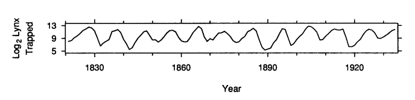
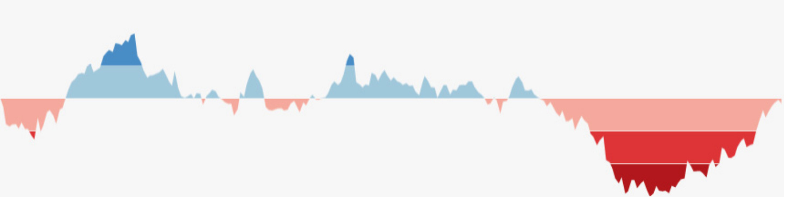
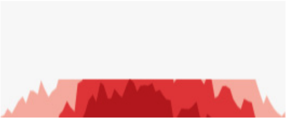

Time Series and Temporal Data in ML
DS-GA 3001 - Fall 2026
2026-11-17
The same orders, two time structures
Sequential: sales by month, 2013 to 2016

Cyclic: number of orders by day of the week

Neither chart can show what the other shows.
- Left answers: is the business growing, and when are the peaks?
- Right answers: which day of the week is slow?
- Same order records both times. Choosing the bin (month or weekday) is choosing the question.
Line charts: time on x, value on y
Position encodes both time and value; the line’s slope encodes the rate of change.

The same data at three aspect ratios
The aspect ratio (width / height) changes how steep every change looks.

Banking to 45°
- We compare the slopes of line segments most accurately when they are near 45°
- Banking to 45°: choose the aspect ratio so the typical segment has a 45° slope
- Right: Canadian lynx trappings, 1821 to 1934
- Wide and flat (bottom): each cycle rises slowly and falls quickly, which the tall version hides


Several series: color by category
Three categories on shared axes are easy to compare.

Two fixes: filter, or highlight
Filter: show only the series you care about

Highlight: keep the rest as faded context

- Filtering removes the context: are these three series typical?
- Highlighting keeps the context, at the cost of some clutter
- A third fix is small multiples: one small chart per series on shared axes. Nothing is hidden, but two series are harder to overlay.
Stacked areas are hard to read
Four regions as lines

The same four regions stacked

Only the bottom layer and the total have a flat baseline. Every other layer rides on the ones below it.
- Left: comparing any two regions takes a glance, but the total is not drawn
- Right: the total is the top edge, but try to say whether South (red) rose or fell in a given quarter
- Stack when the total and the bottom layer are what matter
Heat maps: time on one axis, categories on the other
Color replaces height, so many series fit in the space of one line chart.

Calendar heat maps
- A heat map laid out by the calendar: rows are weekdays, columns are weeks
- Weekly rhythm reads down a column, seasonal rhythm across a row
- Here: daily bike-share rides, 2014 to mid-2017
- Summers are bright, winters dark, every year

Horizon charts: many series in little space
Line charts squeezed into thin rows

The same rows as horizon charts

Same data, same space. The next two slides show how the right-hand version is built.
- Left: about fifty line charts, each a few pixels tall. They all look flat.
- Right: blue is above the baseline, red below, and darker is further from it
Building a horizon chart (1): cut into bands


Fill the area between the line and the baseline, then slice it into bands of equal height. Darker means further from the baseline.
Building a horizon chart (2): mirror and collapse


Mirror the negative values above the baseline, then slide every band down to the baseline. Height becomes color intensity.
Sparklines
“Small, intense, word-sized graphics with typographic resolution.” (Edward Tufte, Beautiful Evidence, 2006)

No axes and no labels: a sparkline sits beside a number and shows where it came from.
A random train/test split is too optimistic

Same synthetic series; gradient-boosted trees on time index, day of week and day of year.
Backtesting: rolling-origin evaluation

Same synthetic series and the linear model from two slides back; six folds, each tested on the next 120 days.
Residuals show what the model missed

Same synthetic series; the linear model with the day-of-week inputs removed.
Error grows with the forecast horizon

Same synthetic series; a separate linear model per horizon, each given the 14 most recent days observed when the forecast is issued. All horizons are scored on the same 93 days, each forecast issued on or after the last training day.
Four shapes of drift

The shape decides how to respond: a sudden change calls for retraining, a recurring one for keeping the old model around.
Schematic, after Gama et al. (2014).
Two monitors, two different alarms

Same synthetic stream. Weeks 20 to 32: the inputs shift and the labeling rule is unchanged. Week 44: the rule changes and the inputs do not.
Three kinds of anomaly

Schematic series. Dotted lines mark the highest and lowest values of the normal series.